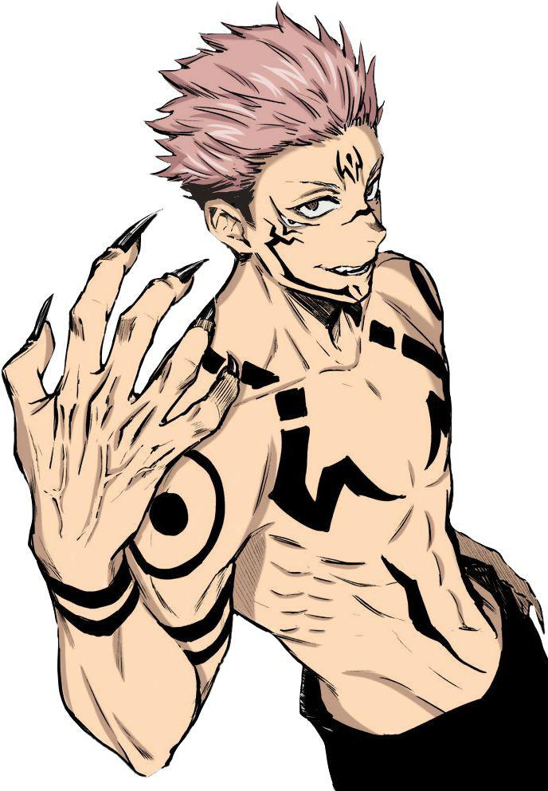
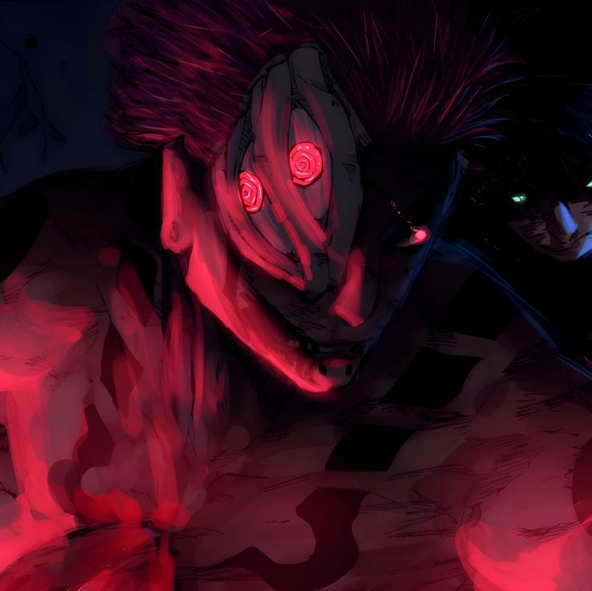
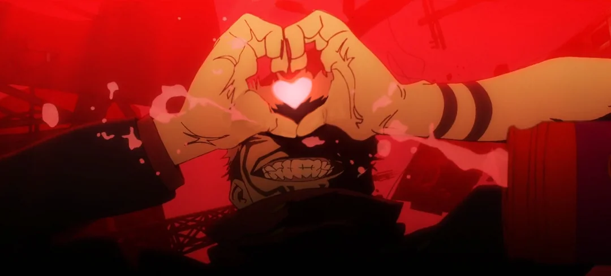

Jujutsu Kaisen é um anime adaptado pela obra do mangá de mesmo título do mangaká Gege Akutami. A história gira em torno de um universo com feitiços e maldições, tendo como personagem principal Ryomen Sukuna, conhecido como o rei das maldições.
Sukuna foi derrotado e selado em 20 dedos (possuindo quatro braços em sua forma original). Um desses dedos foi engolido pelo protagonista Yuji Itadori, trazendo Sukuna de volta à vida.
A cerca de mil anos atrás, Sukuna era conhecido como “Rei das Maldições”, durante a Era de Ouro da feitiçaria. Ele era um demônio impiedoso, matando até mesmo mulheres e crianças sem remorso algum. Diversos feiticeiros tentaram derrotá-lo, porém sem sucesso. Mesmo na Era de Ouro tendo feiticeiros absurdamente fortes, foram necessários vários deles para conseguir derrotar Sukuna, pois ele era tão poderoso que seu corpo não poderia ser destruído.
Com isso, seus 20 dedos foram selados e viraram objetos amaldiçoados. Caso alguém os reunisse e os consumisse, ele voltaria à vida com a mesma força de mil anos atrás, colocando toda a humanidade em risco.
Seu nascimento ainda é incerto, a história mais conhecida é de que Sukuna seria um governante de uma província, que foi atacada por um Clã. Ele foi derrotado durante a batalha tentando proteger seu povo.
No meio de sentimentos de remorso e ódio, quando foi profanado a mil anos atrás, voltou com sede e busca de vingança, acabando por descontrolar e virar um demônio.
Fukuma Misushi: Santuário Malévolo é diferente de outros tipos de Expansão de Domínio, pois não cria um espaço separado com uma barreira. Por isso, é considerada uma técnica verdadeiramente divina, pois a capacidade de realizar o domínio inato de alguém sem usar uma barreira é semelhante a um artista desenhando uma obra-prima no ar em vez de em uma tela.
Ao permitir uma rota de fuga, um Voto de Vinculação é formado, o que aumenta enormemente a área efetiva do golpe garantido com um raio máximo de quase 200 metros.O raio pode ser reduzido, se desejado.
Dentro do Santuário Malévolo, Sukuna é capaz de utilizar Cleave e Dismantle para atacar implacavelmente qualquer coisa em seu raio. Sukuna pode configurá-lo para atingir automaticamente qualquer objeto inanimado com Dismantle e qualquer coisa com energia amaldiçoada com Cleave.
Desmantelar e corte: Desmantelar é o ataque cortante padrão de Sukuna. É normalmente usado para objetos inanimados, porém pode ser usado contra espíritos amaldiçoados com grande eficácia. (Usado para matar Satoru Gojo)
Manipulação de fogo: Possui domínio de fogo.
Todos os Direitos Reservados © - Mauricio Silva de Souza e Sabrina Teixeira de Araujo